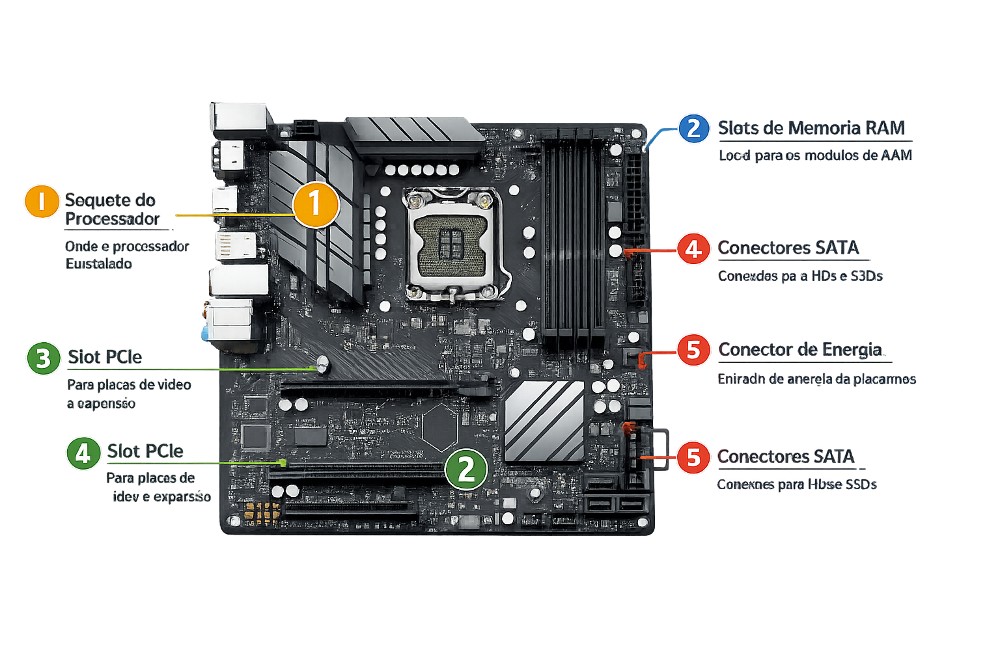

1. Soquete do Processador
Local onde o processador é instalado e conectado à placa-mãe.
Local onde o processador é instalado e conectado à placa-mãe.
Utilizado principalmente para a instalação da placa de vídeo.

Encaixes utilizados para instalar os módulos de memória RAM.
Permite a instalação de placas de expansão adicionais.
Responsáveis pela conexão de HDs e SSDs SATA à placa-mãe.
| Chipset | Indicação | Processadores Compatíveis |
|---|---|---|
| H610 | Estudos, internet e tarefas básicas | Intel Core i3, i5 e i7 (12ª, 13ª e 14ª geração) |
| B760 | Jogos e uso geral | Intel Core i5, i7 e i9 |
| Z790 | Alto desempenho e overclock | Intel Core i7 e i9 |
| A620 | Uso básico e custo-benefício | AMD Ryzen 5 e Ryzen 7 |
| B650 | Jogos e produtividade | AMD Ryzen 5, 7 e 9 |
| X670 | Máximo desempenho | AMD Ryzen 7 e Ryzen 9 |